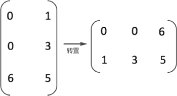
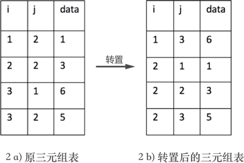
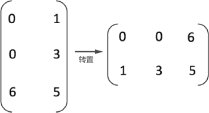
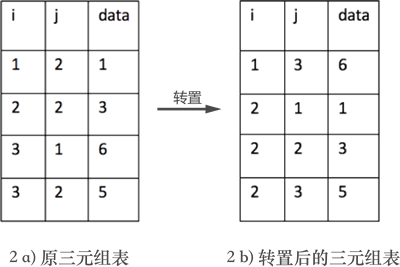
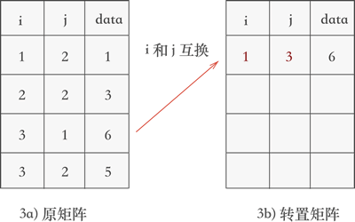
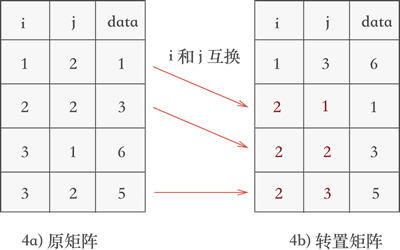

矩阵（稀疏矩阵）的转置算法（C语言）详解
矩阵（包括稀疏矩阵）的转置，即互换矩阵中所有元素的行标和列标，如图 1 所示：

图 1 矩阵转置示意图
但如果想通过程序实现矩阵的转置，互换行标和列标只是第一步。因为实现矩阵转置的前提是将矩阵存储起来，数据结构中提供了 3 种存储矩阵的结构，分别是三元组顺序表、行逻辑链接的顺序表和十字链表。如果采用前两种结构，矩阵的转置过程会涉及三元组表也跟着改变的问题，如图 2 所示：

图 2 三元组表的变化
因此通过以上分析，矩阵转置的实现过程需完成以下 3 步：
矩阵转置的实现思路是：不断遍历存储矩阵的三元组表，每次都取出表中 j 列最小的那一个三元组，互换行标和列标的值，并按次序存储到一个新三元组表中，。
例如，将图 2a) 三元组表存储的矩阵进行转置的过程为：
对比图 4 和图 2b) 可以看到，矩阵被成功地转置。
因此，矩阵转置的 C 语言实现代码为：

图 1 矩阵转置示意图
但如果想通过程序实现矩阵的转置，互换行标和列标只是第一步。因为实现矩阵转置的前提是将矩阵存储起来，数据结构中提供了 3 种存储矩阵的结构，分别是三元组顺序表、行逻辑链接的顺序表和十字链表。如果采用前两种结构，矩阵的转置过程会涉及三元组表也跟着改变的问题，如图 2 所示：

图 2 三元组表的变化
图 2a) 表示的是图 1 中转置之前矩阵的三元组表，2b) 表示的是图 1 中矩阵转置后对应的三元组表。
不仅如此，如果矩阵的行数和列数不等，也需要将它们互换。因此通过以上分析，矩阵转置的实现过程需完成以下 3 步：
- 将矩阵的行数和列数互换；
- 将三元组表（存储矩阵）中的 i 列和 j 列互换，实现矩阵的转置；
- 以 j 列为序，重新排列三元组表中存储各三元组的先后顺序；
此 3 步中，前两步比较简单，关键在于最后一步的实现。本节先介绍较容易的一种。
矩阵转置的实现思路是：不断遍历存储矩阵的三元组表，每次都取出表中 j 列最小的那一个三元组，互换行标和列标的值，并按次序存储到一个新三元组表中，。
例如，将图 2a) 三元组表存储的矩阵进行转置的过程为：
- 新建一个三元组表（用于存储转置矩阵），并将原矩阵的行数和列数互换赋值给新三元组；
-
遍历三元组表，找到表中 j 列最小值 1 所在的三元组 (3,1,6)，然后将其行标和列标互换后添加到一个新的三元组表中，如图 3 所示：

图 3 矩阵转置的第一个过程
-
继续遍历三元组表，找到表中 j 列次小值为 2 的三元组，分别为 (1,2,1)、(2,2,3) 和 (3,2,5)，根据找到它们的先后次序将各自的行标和列标互换后添加到新三元组表中，如图 4 所示：

图 4 矩阵转置的第二个过程
对比图 4 和图 2b) 可以看到，矩阵被成功地转置。
因此，矩阵转置的 C 语言实现代码为：
#include<stdio.h>
#define number 10
typedef struct {
int i, j;
int data;
}triple;
typedef struct {
triple data[10];
int n, m, num;
}TSMatrix;
TSMatrix transposeMatrix(TSMatrix M, TSMatrix T) {
T.m = M.n;
T.n = M.m;
T.num = M.num;
if (T.num) {
int q = 0;
for (int col = 1; col <= M.m; col++) {
for (int p = 0; p < M.num; p++) {
if (M.data[p].j == col) {
T.data[q].i = M.data[p].j;
T.data[q].j = M.data[p].i;
T.data[q].data = M.data[p].data;
q++;
}
}
}
}
return T;
}
int main() {
TSMatrix M;
M.m = 2;
M.n = 3;
M.num = 4;
M.data[0].i = 1;
M.data[0].j = 2;
M.data[0].data = 1;
M.data[1].i = 2;
M.data[1].j = 2;
M.data[1].data = 3;
M.data[2].i = 3;
M.data[2].j = 1;
M.data[2].data = 6;
M.data[3].i = 3;
M.data[3].j = 2;
M.data[3].data = 5;
TSMatrix T;
for (int k = 0; k < number; k++) {
T.data[k].i = 0;
T.data[k].j = 0;
T.data[k].data = 0;
}
T = transposeMatrix(M, T);
for (int i = 0; i < T.num; i++) {
printf("(%d,%d,%d)\n", T.data[i].i, T.data[i].j, T.data[i].data);
}
return 0;
}
程序运行结果为：
(1,3,6)
(2,1,1)
(2,2,3)
(2,3,5)
O(n2)。关注公众号「站长严长生」，在手机上阅读所有教程，随时随地都能学习。内含一款搜索神器，免费下载全网书籍和视频。

微信扫码关注公众号